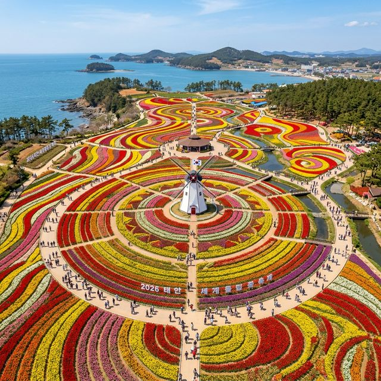
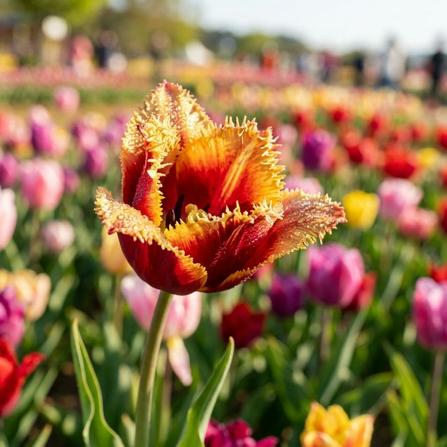
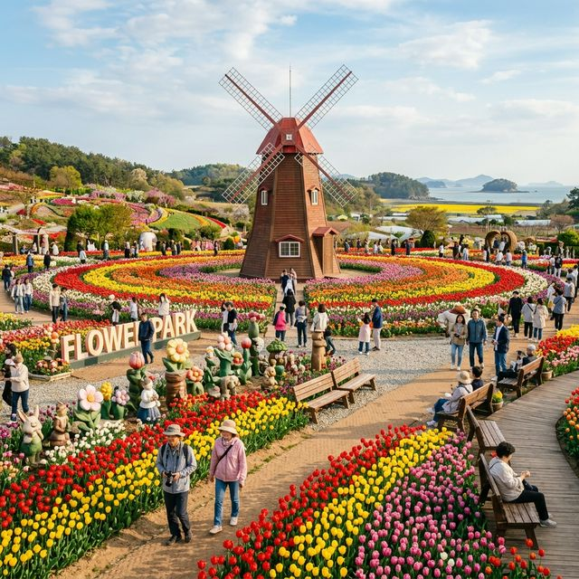

올해로 제15회를 맞이하는 태안 세계 튤립 꽃 박람회는 2026년 4월 1일(수)부터 5월 6일(수)까지 36일간의 대장정을 이어갑니다. 4월의 시작과 함께 문을 연 이번
박람회는 가정의 달인 5월 초 황금연휴까지 이어져 가족 단위 방문객들에게 최고의 선택지가 될 전망입니다. 운영 시간은 매일 오전 9시부터 오후 6시까지이며, 입장은 오후 5시에 마감되니 일정 관리에
유의하셔야 합니다.
가장 주의해야 할 점은 개최 장소의 물리적 변화입니다. 과거 꽃지해수욕장 인근에서 열리던 축제가 이제는 태안군 남면 마검포길 200번지에 위치한 '코리아 플라워 파크'로
완전히 이전되었습니다. 내비게이션에 구주소를 입력하는 실수를 범할 경우, 황금 같은 주말 시간을 도로 위에서 낭비할 수 있습니다. 반드시 '마검포' 혹은 '네이처월드'를 목적지로 설정하시고, 주변에
설치된 이정표를 꼼꼼히 확인하며 이동하시길 권장합니다.

기하학적 패턴으로 수놓아진 2026 태안 튤립 박람회의 압도적 전경 — AI 제작 이미지
글을 작성하는 현재(4월 15일) 기준으로 태안의 튤립은 약 85% 이상의 전체 개화율을 보이며 절정의 아름다움을 뽐내고 있습니다. 온도에 민감한 조생종 튤립들은 이미
완벽하게 만개하여 꽃잎을 활짝 열었고, 상대적으로 늦게 피는 만생종들도 이번 주말을 기점으로 100% 개화를 완료할 것으로 보입니다. 즉, 지금 방문하신다면 가장 싱싱하고 화려한 튤립의 정점을 목격하실
수 있다는 뜻입니다.
만약 방문 날짜를 고민 중이시라면 4월 20일 이전을 강력하게 추천해 드립니다. 튤립은 개화 후 약 7~10일 정도가 가장 아름다운데, 4월 말로 갈수록 꽃잎이 떨어지거나
색이 바래는 구간이 생길 수 있기 때문입니다. 현장의 생생한 상태를 미리 보고 싶다면 코리아 플라워 파크 공식 홈페이지의 '실시간 현장 사진' 갤러리를 확인해 보세요. 매일 아침 드론 촬영과 전경
촬영을 통해 업로드되는 사진들은 여러분의 여행 계획에 가장 신뢰할 만한 이정표가 되어줄 것입니다.
박람회 입장권은 현장 발권기와 매표소에서 모두 구매 가능합니다. 성인 기준 1인 14,000원이며, 36개월 이상의 유아부터 만 18세 청소년까지는 11,000원의 요금이
적용됩니다. 만 65세 이상의 경로 우대 대상자와 단체(25인 이상), 그리고 국가유공자나 장애인 분들은 증빙 서류 지참 시 12,000원에 입장할 수 있습니다. 작년 대비 물가 상승분이 소폭
반영되었지만, 부지 내 시설 규모를 생각하면 충분히 납득할 만한 가격대입니다.
무료 입장의 행운을 누릴 수 있는 대상은 36개월 미만의 영유아입니다. 이때 주의할 점은 반드시 주민등록등본이나 의료보험증 등 나이를 증명할 수 있는 서류가 있어야 한다는
것인데요. 모바일 캡처 본으로도 확인이 가능하니 스마트폰에 저장해 두시면 편리합니다. 또한, 원활한 관람을 위해 휠체어나 유모차 대여 서비스가 운영되고 있으나, 주말에는 조기 소진될 확률이 99%이므로
가급적 개인 장비를 지참하시기를 팁으로 전해드립니다.
정직하게 전액을 지참하기보다는 스마트한 온라인 사전 예매 시스템을 활용해 보세요. 네이버 예약이나 소셜 커머스를 통해 하루 전까지만 결제를 완료해도
1,000원~2,000원의 할인을 받을 수 있으며, 현장에서 길게 줄을 설 필요 없이 키오스크에서 즉시 발권이 가능합니다. 작은 금액이라 생각할 수 있지만, 가족 4인이 움직인다면 커피 한 잔 이상의
비용을 절약하는 셈입니다.
수익형 믹스 전략으로 추천하는 최고의 코스는 '튤립 박람회+태안 빛 축제' 콤보입니다. 낮에 튤립 관람을 마친 뒤 영수증을 소지하고 야간 빛 축제장(네이처월드)을 방문하면
입장료 50%라는 파격적인 할인 혜택을 줍니다. 낮에는 천연의 꽃향기에 취하고, 밤에는 환상적인 발광다이오드(LED) 조명 아래에서 낭만을 즐기는 이 코스는 데이트족과 가족 방문객 모두에게 만족도가
200%에 달하는 국민 코스라 할 수 있습니다.

햇살을 머금은 희귀 품종 튤립의 우아한 자태 — AI 제작 이미지
주말 오전 11시, 태안으로 들어가는 77번 국도는 이미 빨간불입니다. 축제장 부지 내에는 약 2,500대가량의 주차 공간이 확보되어 있지만, 화창한 봄날의 인파를 모두 수용하기엔 역부족입니다. 주차
대기 시간을 30분 이내로 줄이고 싶다면 오전 8시 40분까지는 도착하여 개장 문이 열리기를 기다리는 '오픈 런' 전략이 사실상 유일한 정답입니다.
만약 조금 늦으셨다면 축제장 입구의 메인 주차장만 고집하지 마시고, 안내 요원의 지시에 따라 제2, 제3 임시 주차장으로 신속하게 이동하세요. 조금 더 걷더라도 도로
위에서 시동을 걸고 있는 것보다는 훨씬 정신 건강에 이롭습니다. 팁을 하나 더 드리자면, 마검포 항구 쪽 공터나 인근 캠핑장 주변의 빈자리를 활용한 뒤 도보로 5~10분 이동하는 것이 오히려 퇴장 시
병목 현상을 피하는 영특한 방법이 될 수 있습니다.
첫 번째 명당은 단연 '대형 풍차 언덕'입니다. 네덜란드의 감성을 그대로 옮겨놓은 듯한 거대한 풍차와 그 앞을 가득 채운 빨간색, 노란색 튤립의 조화는 태안 튤립 축제의
상징과도 같습니다. 풍차 정면보다는 측면 언덕 위에서 풍차와 꽃밭을 한 앵글에 담을 때 가장 입체적인 사진이 나옵니다.
두 번째는 '플라워 카펫 로드'입니다. 수만 송이의 꽃을 하나의 거대한 그림처럼 식재해 놓은 중앙 광장인데요. 이곳은 지상에서 찍기보다 주변에 설치된 조망대를 올라가
위에서 내려다보는 구도로 촬영할 때 비로소 그 진가를 발휘합니다. 마지막 세 번째는 바다 쪽 산책로입니다. 서해 바다의 푸른 수평선과 튤립이 묘하게 어우러지는 이 이색적인 풍경은 오직 태안에서만 만날
수 있는 독보적인 프레임입니다.
꽃향기를 맡다 보면 금세 허기가 지기 마련입니다. 태안에 왔다면 반드시 맛봐야 할 향토 음식이 있으니 바로 '게국지'입니다. 김치와 게를 함께 끓여내 구수하면서도 시원한
국물 맛은 봄철 나른해진 입맛을 깨우기에 충분합니다. 박람회장 인근 안면도 입구 쪽에는 수십 년 전통의 게국지 전문점들이 몰려 있으니, 조미료 맛이 아닌 천연의 감칠맛을 내는 곳을 골라 방문해
보세요.
조금 더 가벼운 한 끼를 원하신다면 '바지락 칼국수'가 훌륭한 대안입니다. 태안의 앞바다에서 갓 잡아 올린 싱싱한 바지락이 그릇을 가득 채울 만큼 푸짐하게 들어갑니다.
면발의 쫄깃함과 바다의 깊은 맛이 어우러진 칼국수 한 그릇이면 여행의 피로가 싹 가시는 느낌을 받을 수 있습니다. 식사 후에는 인근 카페에서 서해 낙조를 감상하며 즐기는 커피 한 잔의 여유도 절대 잊지
마세요.

서해 바다의 바람과 튤립 향기가 어우러진 꿈같은 풍경 — AI 제작 이미지
태안 튤립 축제장은 그늘이 거의 없는 평지 광장입니다. 4월의 햇살은 생각보다 강렬하여 잠시만 방심해도 피부가 붉게 달아오를 수 있으니 자외선 차단제와 넓은 챙 모자는
선택이 아닌 필수입니다. 또한 바닷가 특유의 변덕스러운 증기압과 바람 때문에 낮에는 덥고 해가 지면 급격히 쌀쌀해질 수 있으므로 가벼운 바람막이나 카디건을 꼭 챙기시길 권장합니다.
가장 중요한 준비물은 바로 '편안한 운동화'입니다. 박람회장을 한 바퀴 제대로 둘러보려면 최소 1~1.5시간 이상을 걸어야 합니다. 바닥이 평탄하긴 하지만 오랜 시간 걷다
보면 발의 피로도가 상당하므로 굽이 있는 구두보다는 쿠션감이 좋은 신발을 신으셔야 즐거운 관람을 망치지 않을 수 있습니다. 그리고 넓은 부지를 이동하다 보면 갈증이 나기 마련이니 개인용 텀블러나 생수를
미리 지참하시면 현장 매점의 긴 줄을 피하는 지혜가 됩니다.
자연이 내뿜는 에너지는 그 어떤 인공적인 위로보다 강력합니다. 2026년 태안에서 만나는 튤립의 대향연은 지난겨울의 추위를 이겨낸 생명력의 결정체입니다. 단순히 예쁜 꽃을 구경한다는 수준을 넘어,
가족과 연인이 함께 흙길을 밟고 바다 냄새를 맡으며 대화하는 그 시간 자체가 **최고의 힐링**이자 살아있는 교육의 장이 될 것입니다.
현재 튤립의 컨디션은 최상이며, 축제 위원회 측에서도 관람 편의를 위해 만반의 준비를 마친 상태입니다. 이번 주말, 스마트폰 속에만 있는 풍경이 아닌 여러분의 오감을 자극하는 진짜 봄을 태안에서 직접
확인해 보시는 건 어떨까요? 튤립의 고운 빛깔처럼 여러분의 2026년 봄날도 찬란하게 빛나길 기원하며 글을 마칩니다.